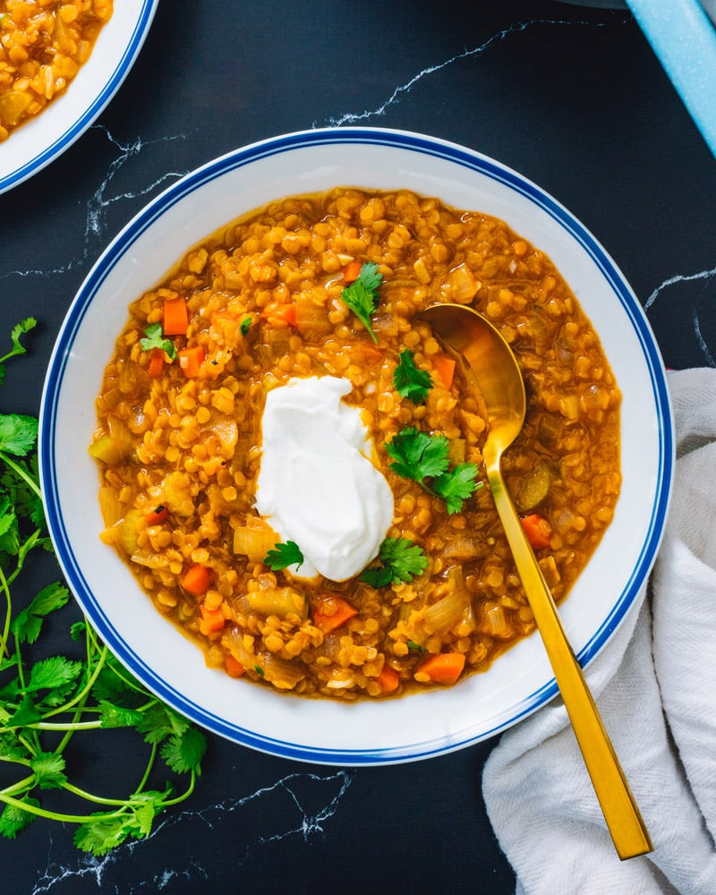

- Serves: 4 people
- Prep Time: 5 min
- Cooking: 15 min
- Calories: 332 cal
If there’s one food that always satisfies, it’s a great lentil soup. Lentils are one of nature’s wonders: they’re full of protein, shelf stable for years, inexpensive, and make for some of the most satisfying filling meals. Here’s a perfect meal to use them: this simple Red Lentil Soup! It’s deliciously hearty, featuring aromatic vegetables, lemon and a hint of smoked paprika.
Ingredients
Directions
- Peel the carrots. Finely dice the carrot, onion, and celery. Mince the garlic. In a large pot or Dutch oven, heat the olive oil over medium heat. Add the onion, carrots and celery, and sauté until the carrots are tender, about 5 to 7 minutes. Stir in the garlic and sauté for 1 minute. Add the broth, water, red lentils, smoked paprika, lemon zest, kosher salt and fresh ground pepper. Bring to a low simmer, then cover halfway and gently simmer until the lentils are just soft but before they start to break apart, about 7 to 10 minutes. Watch closely and taste to assess doneness. The finished soup should be brothy with the lentils just soft; cooking past this point yields a very thick stew which is just as delicious but less soup-like. (If you’d like, you can add handfuls of greens in the last few minutes, like chopped spinach or kale). Taste and add additional salt to taste, and a few grinds black pepper. Leftovers can become very thick, so you can add a little water or broth when reheating.